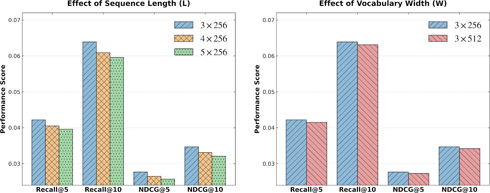
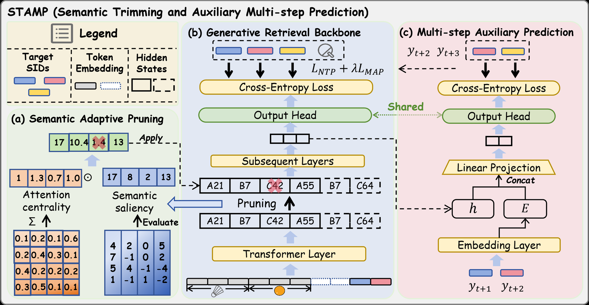
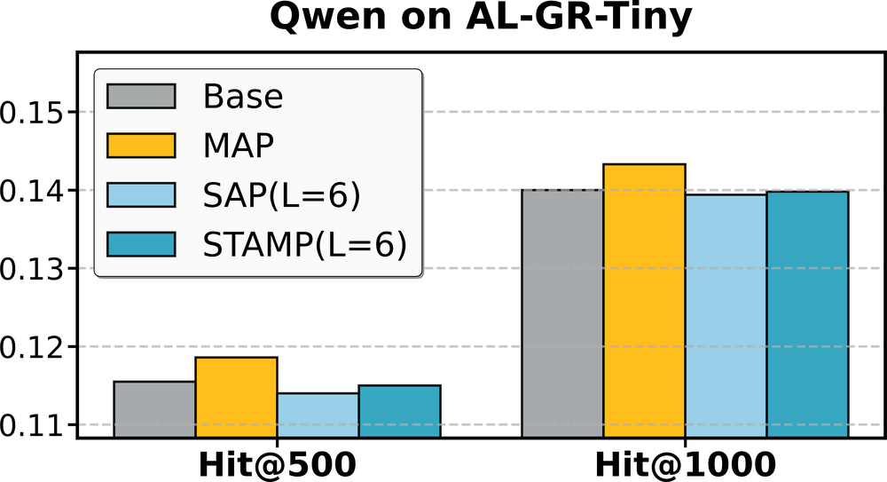
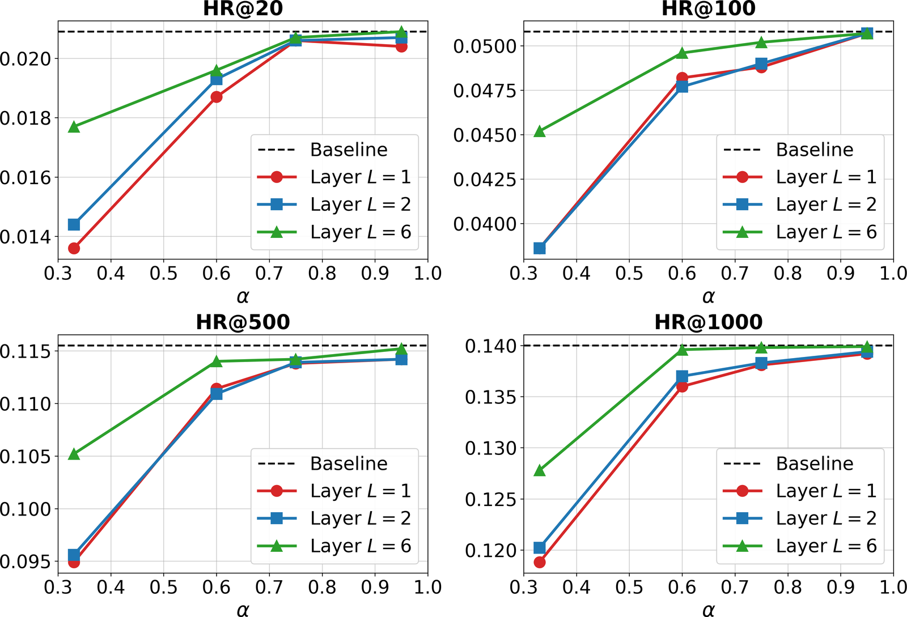

目录 · 10 节
1它到底在解决什么问题？2先看全景3输入端：剪掉哪些 token4输出端：多预测一个 token5效果：快了多少，掉没掉点6两个部件各管什么7剪多少、在哪一层剪8我认为它的局限9一个生成式推荐团队可以怎么试10结论与评价分享 SHARE
在用 Semantic ID 做生成式推荐、又被训练成本卡住的团队值得读，但要带着问题读。它处理的是一个很实际的矛盾：每件商品拆成 3 个甚至更多 SID token 之后，用户历史变长好几倍，训练又慢又占显存，而多出来的 token 里有很多是重复的类目和品牌。STAMP（作者提出的训练框架）的核心思想一句话：在 Transformer 中间某一层，按“自身激活强度 × 被别的 token 关注的程度”给每个 token 打分，只把高分的留给后面的层；同时在训练时多加一个“再往后多预测一个 token”的辅助损失，把剪枝损失的信息补回来。在 Amazon 三个数据集上，它把训练速度提高 1.36 到 1.38 倍、峰值显存降低 52% 以上，Recall@10 和原模型基本持平；在国内电商平台公开的工业数据 AL-GR-Tiny 上，速度提高 1.34 倍，显存只省 17.2%。
它到底在解决什么问题？
生成式推荐把“推荐下一件商品”当成生成任务：模型读入用户的历史行为序列，逐个 token 生成目标商品的编号。早期每件商品一个独立 ID，词表大、新品没法和老商品共享信息。现在主流做法是 Semantic ID（SID）：先用文本模型得到商品的 embedding，再用 RQ-VAE 或 RQ-Kmeans 逐层量化成几个离散码，例如第一个码大致对应类目，后面的码越来越细。语义相近的商品共享前缀，冷启动和泛化都好一些。
代价是序列变长。下面是一个示意：
| 用户最近买的商品（示意） | 用单个 ID 表示 | 用 3 个 SID token 表示 |
|---|---|---|
| 某品牌保湿面霜 | 1 个 token | 护肤 · 品牌甲 · 面霜 |
| 同品牌爽肤水 | 1 个 token | 护肤 · 品牌甲 · 化妆水 |
| 同品牌精华 | 1 个 token | 护肤 · 品牌甲 · 精华 |
| 一支口红 | 1 个 token | 彩妆 · 品牌乙 · 口红 |
4 件商品从 4 个 token 变成 12 个。论文在 GRID（一个开源的 SID 生成式推荐框架）上的设置是输入 120 个 token、每件商品 3 个码，按我的换算相当于最近 40 件商品。attention 的计算量随长度平方增长，所以显存和训练时间都跟着涨。而且表里“护肤”出现了 3 次、“品牌甲”出现了 3 次：第一次出现时它告诉模型这个用户偏好护肤和品牌甲，后两次带来的新信息就少得多。
作者还观察到第二个问题：SID 越细，效果反而可能变差。

左图里 Recall@10 从 3 层的约 0.064 降到 5 层的约 0.060（从图上读）。作者把这两个问题归到同一个原因，称为“语义稀释”：商品拆得越细，输入里低价值、重复的 token 越多；而监督信号仍然只来自序列末尾那一件目标商品，没有随序列变长而增加。前者浪费算力，后者让模型更难从长历史里找到真正决定购买的那几个 token。
先看全景

STAMP 由两个独立的部件组成：剪枝部件 SAP（Semantic Adaptive Pruning，语义自适应剪枝）和辅助预测部件 MAP（Multi-step Auxiliary Prediction，多步辅助预测，和检索指标 MAP 无关）。训练流程如下：
| 步骤 | 做什么 | 产出 |
|---|---|---|
| 1. 前几层 | 照常处理完整的 SID 序列 | 每个 token 的隐藏状态和 attention 权重 |
| 2. 剪枝层（SAP） | 给每个 token 打分，按保留比例 α 留下高分 token，恢复原来的先后顺序 | 一条更短的序列 |
| 3. 后续各层 | 只处理剩下的 token | 预测目标商品 SID 的隐藏状态 |
| 4. 损失 | 常规的逐 token 交叉熵，加上 λ 倍的辅助损失（MAP） | 训练梯度 |
关键的分工是：剪枝只负责省算力，辅助预测只负责让监督更密。下面拆开讲。
输入端：剪掉哪些 token
为什么要在模型内部剪，而不是直接把输入截短？因为 SID 序列里很难事先判断哪个 token 没用。自然语言里有“的”“了”这样的虚词可以删，SID 里每个 token 都是一个有意义的码。作者的办法是让模型先跑几层，再根据模型自己算出来的信号决定删谁。
每个 token 的分数由两部分相乘。第一部分是语义显著度：这个 token 在剪枝层的隐藏向量取绝对值求和（ℓ1 范数），再做归一化，数值越大说明这个 token 激活越强。第二部分是 attention 中心度：把所有 head、所有其他 token 分给它的 attention 权重加起来，越大说明别的 token 越常从它这里取信息。
其中 是第 i 个 token 的最终分数， 是语义显著度， 是 attention 中心度。用乘法的直觉是：只有自身信息多、又被别人频繁引用的 token 才值得留。
框架图左边就是一个能手算的例子。四个 token 的中心度是 1、1.3、0.7、1.0，显著度是 17、8、2、13，相乘得到 17、10.4、1.4、13。第三个 token 两项都低，分数只有 1.4，被剪掉。如果只看中心度，第二个 token（1.3）排第一；乘上显著度以后，它排到了第三。
选出要保留的 token 之后，还有两个细节。第一，按原来的位置重新排序，再把这些隐藏状态取出来，所以历史的先后顺序不乱。第二，保留下来的 token 沿用原来的位置编号，不重新从 0 编。这样 Qwen 这类用 RoPE 的模型仍然知道两个相邻 token 之间原本隔了多远。对 Qwen 这种 decoder-only 结构，目标商品和历史在同一条序列里，作者额外规定目标商品的 token 一律保留，不参与打分。否则目标 token 可能被剪掉，梯度就传不回来了。
这一步没有新增参数，分数直接复用主干已经算好的 attention 权重。保留比例在 T5 上取 α=1/3，也就是剪掉三分之二；在 Qwen 上取 α=0.6。
输出端：多预测一个 token
剪枝丢了信息，模型从剩下的 token 里学偏好就更吃力。作者的第二个部件是给训练加一个辅助目标。
常规训练里，目标商品的 SID 有 3 个 token，模型在每一步只预测下一个 token。MAP 在每一步多做一件事：拿当前位置的隐藏状态 ，拼上下一个真实 token 的 embedding ，过一个 MLP，再用主干的输出层预测再下一个 token 。
是常规的逐 token 交叉熵， 是多预测一步的交叉熵，λ 取 0.3。
用上面的示意商品走一遍：目标是“彩妆 · 品牌乙 · 口红”。常规训练有 3 个预测：从历史预测“彩妆”，从历史加“彩妆”预测“品牌乙”，再预测“口红”。MAP 额外加 2 个：在预测“彩妆”的位置，喂入真实的“彩妆”，要求预测“品牌乙”；在预测“品牌乙”的位置，喂入真实的“品牌乙”，要求预测“口红”。这样一来，负责预测第一个码的隐藏状态，也要带上对后面码有用的信息。
为什么喂真实 token，而不是模型自己预测的？因为预测可能是错的，错的输入会让辅助目标学到噪声。这一点和 DeepSeek-V3 的 MTP 模块做法相同。辅助模块只有一个 MLP，输出层和主干共享，推理时整个去掉，不增加线上延迟。
效果：快了多少，掉没掉点
作者在两种结构上做了实验。一条线是 GRID 上的小号 T5：4 层 encoder、4 层 decoder，隐藏维度 128，数据是 Amazon 的 Beauty、Sports、Toys，最后一次交互做测试，结果取 5 个随机种子的平均。另一条是 FORGE（一个面向工业场景的 SID 生成式推荐基准框架）上的 Qwen2.5-0.5B，数据是 AL-GR-Tiny：来自国内一家大型电商平台，用前四天行为训练、第五天测试，单次运行。唯一的对比方法是 EARN（一种推理加速方法）：它在历史的前后各放一个可学习的“寄存器” token，前几层里这两个 token 通过 attention 读取整段历史；到指定层后丢掉全部历史 token，后面的层只看这两个寄存器。EARN 原本用于加速推理，这里拿来加速训练。L=1 表示在第 1 层后剪枝或压缩。
| 数据集 | 指标 | 原模型 | EARN | STAMP | STAMP 训练加速 / 显存降低 | EARN 训练加速 |
|---|---|---|---|---|---|---|
| Beauty（T5, L=1） | Recall@10 | 0.0645 | 0.0591 | 0.0657 | 1.38× / 53.3% | 2.16× |
| Sports（T5, L=1） | Recall@10 | 0.0354 | 0.0311 | 0.0354 | 1.36× / 54.7% | 2.16× |
| Toys（T5, L=1） | Recall@10 | 0.0499 | 0.0415 | 0.0509 | 1.36× / 52.1% | 2.20× |
| AL-GR-Tiny（Qwen, L=6） | Hit@1000 | 0.1400 | 0.1021 | 0.1405 | 1.34× / 17.2% | 2.62× |
| AL-GR-Tiny（Qwen, L=6） | Hit@20 | 0.0209 | 0.0152 | 0.0207 | 同上 | 同上 |
这张表说明了两件事。第一，EARN 快得多，但把整段历史压进两个 token 损失太大，Toys 上 Recall@10 掉了 17%，工业数据上 Hit@1000 掉了 27%。STAMP 保留的是原来的 token，只是数量少了，所以效果基本守住。第二，STAMP 和原模型的差距落在随机波动里。Beauty 上 STAMP 的 Recall@10 比原模型高 0.0012，而两者各自的标准差是 0.0022 和 0.0019，所以这只能算持平，不能算提升。
速度为什么只有 1.3 倍出头，而不是剪掉三分之二就快三倍？因为第 1 层仍然处理全部 token，decoder 部分也不受影响，剪枝只省掉了 encoder 后几层的计算。Qwen 上显存只省 17.2%，原因有两个：α=0.6 比较保守；0.5B 模型有 24 层，参数和优化器状态占的显存是固定的，剪 token 只减少随序列长度变化的那部分激活。
两个部件各管什么
作者把两个部件拆开测了一遍效率：
| 设置（Beauty, T5） | 训练时间 | 加速 | 峰值显存降低 |
|---|---|---|---|
| 原模型 | 212s | – | – |
| 只加 MAP | 216s | 0.98× | 约 0% |
| 只加 SAP（L=1） | 146s | 1.45× | 53.3% |
| STAMP（L=1） | 154s | 1.38× | 53.3% |
加速完全来自剪枝，辅助预测让训练慢了约 2%。在 Qwen 上，MAP 的辅助 MLP 输入维度是 896 的两倍，显存反而多用了 2.42%。
效果方面，作者在 Amazon 三个数据集上看到只加 MAP 就比原模型好，只加 SAP 一般略差（Beauty 和 Toys 在第 2 层剪时反而略好），两个一起介于中间且接近原模型。工业数据上的消融值得单独看：

从图上读，只加 MAP 的 Hit@1000 约 0.143，原模型 0.140，STAMP 约 0.140。这说明在工业数据上，MAP 带来的提升被剪枝抵消掉了，STAMP 本质上是“用 MAP 的收益换 1.34 倍的训练速度”。另外图中 STAMP 的 Hit@1000 柱子看起来略低于 0.14，和表里的 0.1405 不完全对得上，引用时要留意这两处有出入。
剪多少、在哪一层剪
在 Qwen 上，作者扫了剪枝层（第 1、2、6 层）和保留比例 α（0.33 到 0.95）：

这张图说明两点。第一，保留 60% 以上的 token 时，剪在哪一层差别不大，效果离原模型很近，可见确实有相当一部分 token 可以去掉。第二，剪得狠的时候，剪得越晚越好：α=0.33 时，第 6 层剪枝的 HR@20 比第 1 层高出约三成（从图上读）。
作者用 attention 热力图解释了原因。有一部分 token 在浅层被大量关注，到深层几乎没人看，作用像搭脚手架：浅层借它们把信息汇总到少数关键 token 上，汇总完就可以拆。剪得太早，这些 token 的信息还没被吸收就没了。另外 T5 实验里还比较了不同的打分方式：只看隐藏向量的 ℓ2 范数，或只看 attention 中心度，效果都不如两者相乘，而且差距在训练后期变大。前者会丢掉自身数值小、但被很多 token 关注的位置，后者会漏掉在深层才逐渐汇集信息的位置。
我认为它的局限
第一，加速比的口径偏乐观。论文的速度是按固定 1,600 步的耗时算的，而 GRID 实验用早停，作者自己也说总步数因方法和种子而不同。剪枝后的模型如果要多训几轮才收敛，每步快 1.38 倍不等于整个训练快 1.38 倍。论文给出的是单步耗时，到收敛的总时长要在自己的数据上测。
第二，缺少最简单的对照。唯一的基线 EARN 是推理加速方法，压缩得非常狠。真正该比的是同样只留三分之一 token 的朴素做法：只保留最近的 40 个 token，或者随机丢掉三分之二。没有这两组，就无法判断“自身激活 × 被关注程度”这套打分到底比“砍掉老历史”好多少。剪枝策略的对比里也只有 pooling 和单一信号，没有按时间截断。
第三，工业数据上的证据最弱。AL-GR-Tiny 只跑了一次，STAMP 和原模型在四个 Hit 指标上的差距都不超过 0.0006，无法判断是否显著；MAP 单独使用反而效果最好。显存节省也从 T5 上的 50% 以上降到 17.2%，模型更大时这个比例会更小。论文的速度和显存数字都是训练阶段的，推理端能省多少同样要自己测。
一个生成式推荐团队可以怎么试
- 先不改训练，只做诊断。在现有 SID 模型的中间层统计每个 token 收到的 attention 总和，按从高到低排序，算一算排在后三分之二的 token 合计分到了全部 attention 的多少，再看它们是不是集中在重复的类目和品牌码上。如果后三分之二分到的 attention 并不少，说明大部分 token 都在被用，剪枝空间不大，就不用往下做了。
- 单独加 MAP。只需一个 MLP，λ 从 0.3 开始，训练时间增加约 1% 到 2%。在工业数据上这是效果最好的设置，看离线 Recall 或 Hit 是否稳定提升。
- 再加剪枝，同时设一个“只保留最近 α·N 个 token”的对照组，用同样的保留比例。从 α=0.6、剪在约四分之一深度开始，比较到收敛为止的总 GPU 时间，而不是单步耗时。
- 用 RoPE 的 decoder-only 模型要保留原位置编号，并固定保留目标段；否则剪枝后的位置关系和梯度都会出问题。
结论与评价
最关键的启发是：SID 序列里重复出现的类目和品牌码大多可以在模型中间层安全丢掉，但要等浅层把它们的信息汇总完再丢。
| 维度 | 评价 |
|---|---|
| 问题重要性 | 高。SID 让序列变长几倍，训练成本是生成式推荐落地的实际瓶颈 |
| 方法创新性 | 中。打分和多步预测都来自 LLM 加速的已有做法，贡献在于组合到 SID 训练上并处理好顺序和位置 |
| 实验证据 | 中低。只有一个推理向的基线，缺少按时间截断的对照，工业数据单次运行且差距极小 |
| 工程成本 | 低。剪枝没有新参数，辅助模块只有一个 MLP，推理时可去掉 |
| 是否值得尝试 | 值得小成本试。先单独试 MAP，再在有截断对照的前提下试剪枝 |
| 适用场景 | 用多层 SID 表示长用户历史、需要频繁重训的生成式召回 |
读完这篇，你觉得
夜读鸮记下了，谢谢你的反馈。
点一下即可，无需登录；再点一次撤回。只统计匿名次数，不记录你是谁。
讨论
欢迎补充实验细节、复现经验或不同看法。需 GitHub 登录。
正在加载讨论…